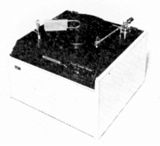
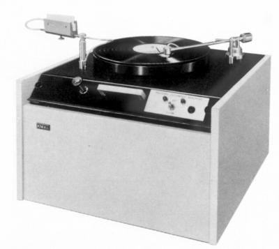
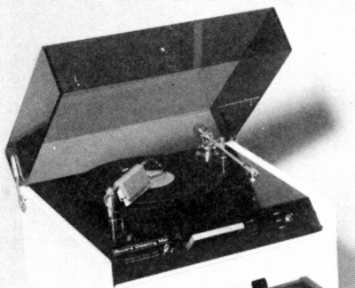
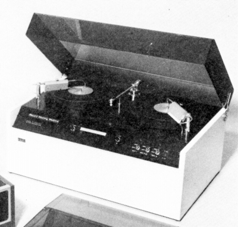
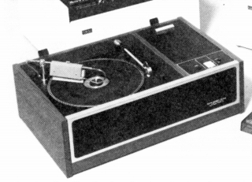
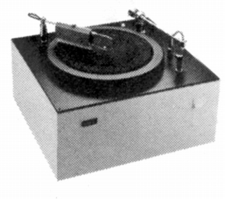

レコードクリーニングマシーン
MK-1

■価格 350,000円
■備考 1975年頃のモデル。
MARK-2


■価格 395,000円
■備考 シングルデッキ自動レコード洗浄機。
蒸留水とアルコールの混合液で洗浄した後、
洗浄液の吸引、乾燥まで自動で行う。
価格は1979年頃のもの
1982年頃は450,000円
■外寸 W49.5×H36.2×D46.0cm
■重量 23.5kg
MARK-3

■価格 495,000円
■備考 MARK-2のダブルデッキタイプ。
価格は1979年頃のもの
1982年頃は600,000円
■外寸 W74.3×H36.2×D47.6cm
■重量 35kg
CR-500

■価格 245,000円
■備考 1980年代に登場した比較的安価な簡易型。
■外寸
■重量 10.5kg
CR-502

■価格 295,000円
■備考 簡易型CR-500の後継モデル。
■外寸 W41.0×H35.0×D38.0cm
■重量 13.2kg
キースモンクスのインデックスへ